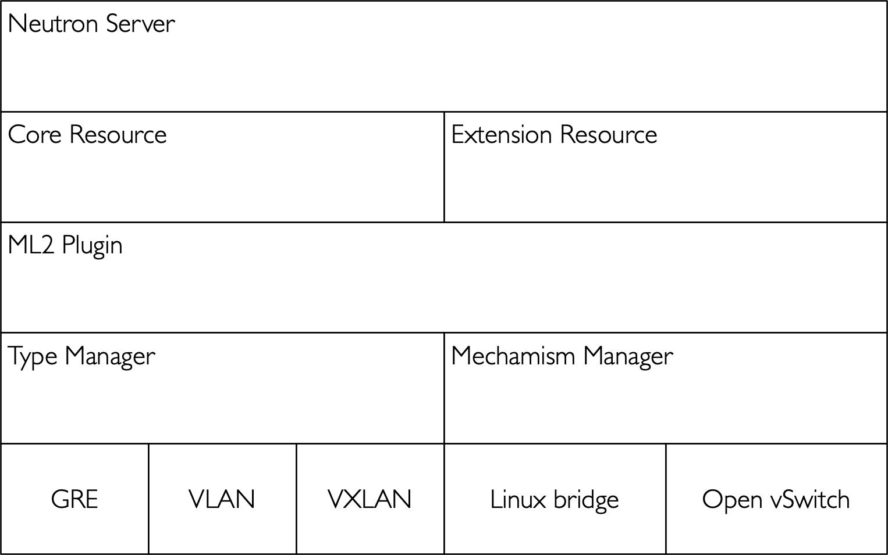

Neutron对每一层网络服务的支持
目录
Neutron二层网络服务
在Neutron中支持二层网络的实现包括Linux Bridge、Open Vswitch，以及针对不同网络设备或者SDN产品的实现。但是，对于不同的实现，Neutron中只有一个插件，叫做ML2，其架构如下图所示。

在ML2出现之前，每种实现也是对应一个插件，但是这样的话，一个是在同一个OpenStack环境中，只能使用一个插件，也就是限制了只能使用一种二层网络技术；另外，由于二层网络数据层的数据库模型相对比较固定，每个插件对于数据库的操作也是类似的，造成了代码的重复。为了解决这个问题，Neutron项目将二层网络的实现进行了重构，即使用统一的ML2作为二层网络数据层和抽象层的插件，至于底层和二层网络真正打交道的部分，则利用ML2中的MechanismDriver来实现。在每个二层网络中，将定义二层网络的类型（agent_type）和虚拟界面的类型（vif_type）以及两者之间的关联，这样在绑定端口时可以根据二层网络的类型，如Linux网桥或者Open Vswitch，来进行绑定。
这样一来，除了让Open Vswitch和Linux Bridge这些不同的插件共存之处，ML2还能让不同的拓扑如Flat、Vlan、GRE、Vxlan和谐共处，从而支持更为复杂的混合网络拓扑环境。
Neutron三层网络服务
路由器是一个具有多网卡（接口）的设备，数据包可以从一个接口路由到另外一个接口。可以是专用硬件实现的专用路由器，普通的Linux系统也可以通过将ipv4 forward特性打开（sysctl -w net.ipv4.ip_forward=1）之后充当路由器使用。另外，由于IPv4地址匮乏，一般内网使用的是私网IPv4地址。内网机器请求公网服务器上的服务，返回的响应到达内网出口路由器之后，需要结合SNAT（Source Network Address Transform，源网络地址转换）信息才能决定将包返回发请求的内网机器。同理外网访问内网机器，在包到达内网路由器后，需要修改目的IP地址，称之为DNAT（Destination Network Address Transform，目的网络地址转换），在OpenStack中也叫浮动IP。
三层目前没有单独的插件结构，由高级服务中的L3 Agent服务向租户提供了基于Linux的路由和NAT功能。目前也仅支持静态路由，所以未来可能会类似于Modular L2一样新增ML3（Modular L3）插件结构去支持动态路由以及其他三层网络路由技术。
另外，Neutron在三层网络上还提供了基于dnsmasq的DHCP服务，用于给虚拟机分配IP，它的调度级别是以单个网络为粒度的，即为每一个网络启动一个dnsmasq的进程提供DHCP服务。虚拟机的IP地址与MAC地址的映射关系将保存在/var/lib/neutron/dhcp/<网络ID>/host文件，并且通过HUP信号重新加载配置文件。
Neutron高级网络服务
在Neutron中所提供的四层网络到七层网络的服务，统称为高级网络服务。
Neutron提供了一个高级服务框架，它的思想类似于ML2：对于和数据库交互的部分，由高级服务框架来完成，对于每一种网络服务的具体实现，可以在此框架下开发不同的驱动程序。而对于高级网络服务的启动配置，需要通过neutron.conf这个配置文件中的service_provider项指定。
负载均衡即服务
负载均衡即服务（LBaaS）：为租户的虚拟机提供负载均衡服务，目前的参考实现是在租户的命名空间下安装haproxy。同时社区也提供其他的驱动程序，如netscaler。
VPN即服务
VPN即服务（VPNaaS）：为每一个租户（VPN用户）在路由提供VPN服务，应用于以下两个场景：
- 第一，一个OpenStack云下不同子网通过VPN通信。
- 第二，其他数据中心的网络通过VPN访问OpenStack的子网。
防火墙即服务
防火墙即服务（FWaaS）：区别在于Neutron中的安全组（Security Group）是在计算节点上配置虚拟机的访问规则，防火墙即服务管理的是在三层网路上，即虚拟路由节点上限制对整个网络的访问控制。也就是说，防火墙即服务中定义的规则应用于租户网络中所有的虚拟机，而每个虚拟机可以自定义不同的安全组，做进一步的安全控制。
网络计量服务
网络计量服务（Metering）：在三层路由级别提供网络计量服务，通过为IP段打标签的方式来计量内部流量和外部流量。流量信息将发送到信息传递系统，从而使得OpenStack中的Ceilometer项目可以收集到该IP段的网络流量计量信息。具体实现是通过网络节点上的iptables来完成的：
- 在每个路由的FORWARD链上增加一个全局的规则。
- 对于每个需要计量的网络流，在计量链上增加规则。
- 这些规则将指向一个特定的用来收集网络流的链上，这个链就代表了计量的标签。
- 增加一个代理来从iptables链中获取带宽信息，这个代理将提取带宽流量的差额信息，并发送消息通知队列中。
DNS即服务
DNS即服务（DNSaaS）：为租户提供动态域名解析服务，目前这个项目不在Neutron里，而是成立了一个单独的项目，叫做Designate